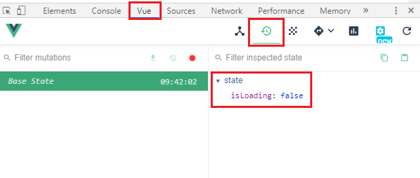
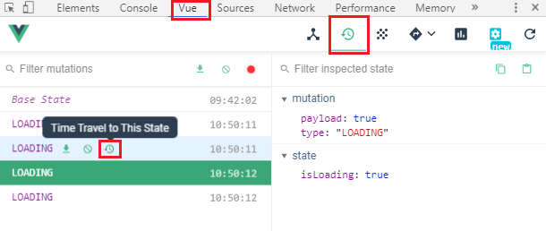

在第一個章節中有提到，在 vuex 中，actions 處理非同步的事件或取得遠端的資料，但不處理資料的狀態，而 mutation 則是改變資料內容的方法，所以上一章節直接更改變數的方式在 vuex 中並不完全正確
在這裡可以透過開發者工具中的 Vue 並在其中找到 Vuex 的選項，可以看到裡面有我們剛才在 state 中新增的變數 isLoading

新增 Actions 與 Mutation
在官方資料中我們可以得到以下資訊 :
1 | export default new Vuex.Store({ |
actions
處理非同步的事件或取得遠端的資料，但不處理資料的狀態
第一個參數
context: 為預設值，包含以下屬性- state
- rootState
- commit
- dispatch
- getters
- rootGetters
第二個參數
payload: 從外部傳進來的數值，由使用者所自訂
mutations
改變資料內容的方法，並建議使用 “常數” 的變數名稱來命名，也就是全部大寫以區分其他變數，但並沒有強制性
而其中的方法同樣具有兩個參數
- 第一個參數
state: 即為設定參數的state - 第二個參數
payload: 同為從外部傳進來的數值，由使用者所自訂，所以可以直接透過action中的payload傳入
設定方法
首先透過 mutations 來設定更改變數的 “方法”
1 | mutations: { |
觸發方法
設定方法後，透過 actions 來觸發 mutations 中的方法，觸發的方式會使用第一個參數 context 中的 commit，而其第一個參數就是要觸發的 “方法名稱”，第二個參數就是要帶入的載荷 status
1 | actions: { |
更改變數
上一章節中，我們直接透過 this.$store.state 來改變變數的值並不完全正確，正確的方式是透過 this.$store.dispatch 來呼叫 actions 中的方法，第一個參數就是 “方法名稱”，第二個參數是要 “帶入的值”，再進一步呼叫 mutations 來更改變數的值
1 | // 錯誤方式 |
在這裡要注意的是，dispatch 是用來 “賦予值” 的，所以 computed 中還是直接 return state 中的變數 isLoading 就可以了
1 | computed: { |
開發者工具
將 vuex 改成正確的方式後，打開開發者工具中的 Vue/Vuex，每次呼叫 mutations 中的方法都會保有紀錄，將游標移到上方就會顯示幾個按鈕，按下 Time Travel to This State 會可回到該狀態檢視
